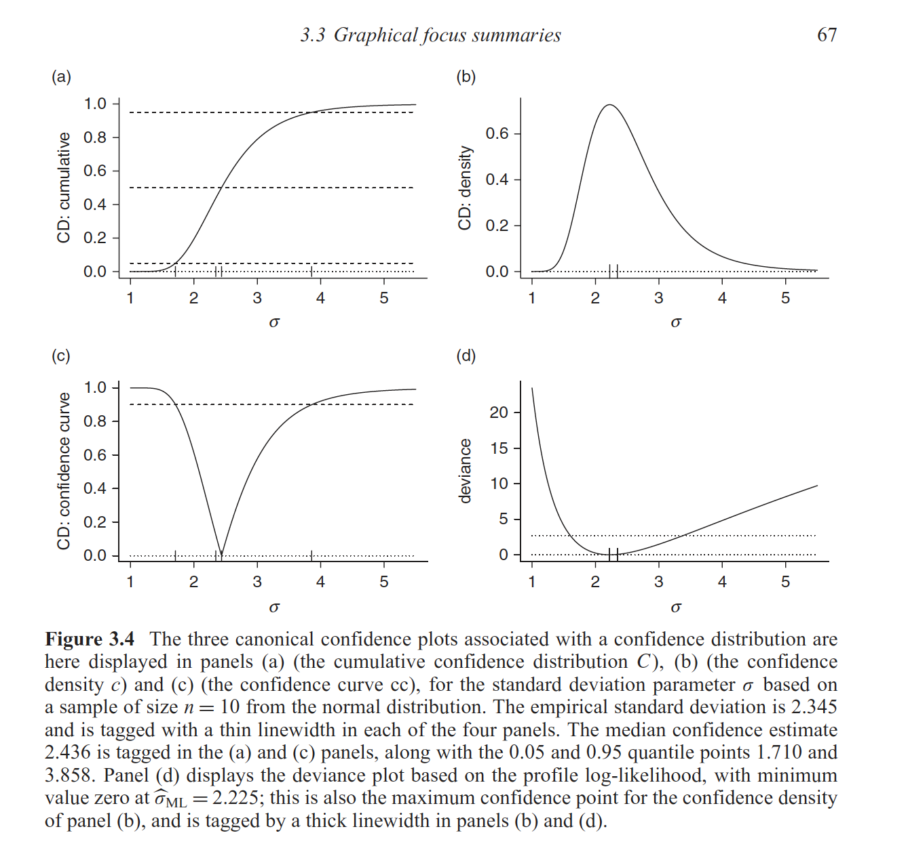

Sample image taken from Schweder T, Hjort NL. (2016)
Here we list some papers that discuss the theory and applications of confidence distributions.1–16
References
1.
Birnbaum A. A unified theory of estimation,
I. The Annals of Mathematical Statistics.
1961;32(1):112-135. doi:10.1214/aoms/1177705145
2.
Rafi
Z, Greenland S. Semantic and cognitive tools to aid statistical science:
Replace confidence and significance by compatibility and surprise.
BMC Medical Research Methodology. 2020;20(1):244. doi:10.1186/s12874-020-01105-9
3.
Fraser DAS. The P-value function
and statistical inference. The American Statistician.
2019;73(sup1):135-147. doi:10.1080/00031305.2018.1556735
4.
Fraser DAS. P-Values: The
Insight to Modern Statistical Inference. Annual
Review of Statistics and Its Application. 2017;4(1):1-14. doi:10.1146/annurev-statistics-060116-054139
5.
Poole C. Beyond the confidence interval.
American Journal of Public Health. 1987;77(2):195-199. doi:10.2105/AJPH.77.2.195
6.
Poole C. Confidence intervals exclude nothing.
American Journal of Public Health. 1987;77(4):492-493. doi:10.2105/ajph.77.4.492
7.
Schweder T, Hjort NL. Confidence and
Likelihood*. Scandinavian Journal of Statistics.
2002;29(2):309-332. doi:10.1111/1467-9469.00285
8.
Schweder T, Hjort NL. Confidence,
Likelihood, Probability: Statistical
Inference with Confidence Distributions.
Cambridge University Press; 2016. https://books.google.com/books/about/Confidence_Likelihood_Probability.html?id=t7KzCwAAQBAJ.
9.
Singh K, Xie M, Strawderman WE. Confidence
distribution (CD) – distribution estimator of a parameter.
arXiv. August 2007. https://arxiv.org/abs/0708.0976.
10.
Sullivan KM, Foster DA. Use of the confidence
interval function. Epidemiology. 1990;1(1):39-42. doi:10.1097/00001648-199001000-00009
11.
Whitehead J. The case for frequentism in
clinical trials. Statistics in Medicine.
1993;12(15-16):1405-1413. doi:10.1002/sim.4780121506
12.
Xie
M, Singh K. Confidence Distribution, the Frequentist
Distribution Estimator of a Parameter: A
Review. International Statistical Review.
2013;81(1):3-39. doi:10.1111/insr.12000
13.
Rothman KJ, Greenland S, Lash TL. Precision and
statistics in epidemiologic studies. In: Rothman KJ, Greenland S, Lash
TL, eds. Modern Epidemiology. 3rd ed.
Lippincott Williams & Wilkins; 2008:148-167. https://books.google.com/books/about/Modern_Epidemiology.html?id=Z3vjT9ALxHUC.
14.
Rücker G, Schwarzer G. Beyond the forest plot:
The drapery plot. Research Synthesis Methods.
April 2020. doi:10.1002/jrsm.1410
15.
Rothman KJ, Johnson ES, Sugano DS. Is flutamide
effective in patients with bilateral orchiectomy? The Lancet.
1999;353(9159):1184. doi:10.1016/s0140-6736(05)74403-2
16.
Cox
DR. Discussion. International Statistical Review.
2013;81(1):40-41. doi:10/gg9s2f